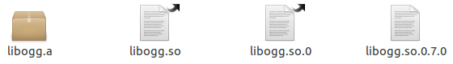

GCC - GNU Compiler Collection - набор компиляторов и сопутствующих утилит, разработанный в рамках движения GNU. GCC один из старейших Open Source проектов, первый релиз состоялся в 1985 году, автор сам Ричард Столлман. В исходном варианте поддерживал только язык C и аббревиатура GCC расшифровывалась как GNU C Compiler. Постепенно набор доступных языков расширялся, были добавлены компиляторы Fortran, C++, Ada. С уверенностью можно сказать, что современный мир Open Source обязан своим рождением GCC (по крайней мере без GCC он был бы другим). В настоящее время проект находиться под крылом Free Software Foundation. GCC выпускается под лицензией GPLv3 и является стандартным компилятором для большинства свободных UNIX-подобных операционных систем. В базовый набор входят компиляторы языков: C, C++, Objective-C, Java, Fortran, Ada. GCC поддерживает все основные процессорные архитектуры. Официальный сайт проекта gcc.gnu.org
Основы
GCC входит в состав любого дистрибутива Linux и, как правило, устанавливается по умолчанию. Интерфейс GCC, это стандартный интерфейс компилятора на UNIX платформе, уходящий своими корнями в конец 60-х, начало 70-х годов прошлого века - интерфейс командной строки. Не стоит пугаться, за прошедшее время механизм взаимодействия с пользователем был отточен до возможного в данном случае совершенства, и работать с GCC (при наличии нескольких дополнительных утилит и путного текстового редактора) проще, чем с любой из современных визуальных IDE. Авторы набора постарались максимально автоматизировать процесс компиляции и сборки приложений. Пользователь вызывает управляющую программу gcc, она интерпретирует переданные аргументы командной строки (опции и имена файлов) и для каждого входного файла, в соответствии с использованным языком программирования, запускает свой компилятор, затем, если это необходимо, gcc автоматически вызывает ассемблер и линковщик (компоновщик).
Любопытно, компиляторы одни из немногих приложений UNIX для которых не безразлично расширение файлов. По расширению GCC определяет что за файл перед ним и, что с ним нужно (можно) сделать. Файлы исходного кода на языке C должны иметь расширение .c, на языке C++, как вариант, .cpp, заголовочные файлы на языке C .h, объектные файлы .o и так далее. Если использовать неправильное расширение, gcc будет работать не корректно (если вообще согласиться, что-либо делать).
Перейдём к практике. Напишем, откомпилируем и исполним какую-нибудь незамысловатую программу. Не будем оригинальничать, в качестве исходного файла примера программы на языке C сотворим файл с вот таким содержимым:
/* hello.c */#include <stdio.h>main(void){ printf("Hello World\n"); return 0;}Теперь в каталоге c hello.c отдадим команду:
Через несколько долей секунды в каталоге появиться файл a.out:
a.out hello.c
Это и есть готовый исполняемый файл нашей программы. По умолчанию gcc присваивает выходному исполняемому файлу имя a.out (когда-то очень давно это имя означало assembler output).
a.out: ELF 64-bit LSB executable, x86-64, version 1 (SYSV), dynamically linked (uses shared libs), for GNU/Linux 2.6.15, not stripped
Запустим получившийся программный продукт:
Hello World
Почему в команде запуска на исполнение файла из текущего каталога
необходимо явно указывать путь к файлу? Если путь к исполняемому файлу
не указан явно, оболочка, интерпретируя команды, ищет файл в каталогах,
список которых задан системной переменной PATH.
$ echo $PATH
/usr/local/sbin:/usr/local/bin:/usr/sbin:/usr/bin:/sbin:/bin:/usr/games
Каталоги в списке разделены символом двоеточия. При поиске файлов, оболочка просматривает каталоги в том порядке, в котором они перечислены в списке. По умолчанию, из соображений безопасности, текущий каталог . в список не внесен, соответственно, оболочка исполняемые файлы искать в нем не будет.
Почему не рекомендуется вносить . в PATH? Считается, что в реальной многопользовательской системе всегда найдется какой-нибудь нехороший человек, который разместит в общедоступном каталоге вредоносную программу с именем исполняемого файла, совпадающим с именем какой-нибудь команды, часто вызываемой местным администратором с правами суперпользователя... Заговор удастся если . стоит в начале списка каталогов.
Утилита file выводит информацию о типе (с точки зрения
системы) переданного в коммандной строке файла, для некоторых типов
файлов выводит всякие дополнительные сведения касающиеся содержимого
файла.
$ file hello.c
hello.c: ASCII C program text
$ file annotation.doc
annotation.doc:
CDF V2 Document, Little Endian, Os: Windows, Version 5.1, Code page:
1251, Author: MIH, Template: Normal.dot, Last Saved By: MIH, Revision
Number: 83, Name of Creating Application: Microsoft Office Word, Total
Editing Time: 09:37:00, Last Printed: Thu Jan 22 07:31:00 2009, Create
Time/Date: Mon Jan 12 07:36:00 2009, Last Saved Time/Date: Thu Jan 22
07:34:00 2009, Number of Pages: 1, Number of Words: 3094, Number of
Characters: 17637, Security: 0
Вот собственно и всё, что требуется от пользователя для успешного применения gcc :)
Имя выходного исполняемого файла (как впрочем и любого другого файла формируемого gcc) можно изменить с помощью опции -o:
$ ls
hello hello.c
$ ./hello
Hello World
В нашем примере функция main() возвращает казалось бы ни кому не нужное значение 0.
В UNIX-подобных системах, по завершении работы программы, принято
возвращать в командную оболочку целое число - в случае успешного
завершения ноль, любое другое в противном случае. Интерпретатор оболочки
автоматически присвоит полученное значение переменной среды с именем ?. Просмотреть её содержимое можно с помощью команды echo $?:
$ ./hello
Hello World
$ echo $?
0
Выше было сказано, что gcc это управляющая программа, предназначенная для автоматизации процесса компиляции. Посмотрим что же на самом деле происходит в результате исполнения команды gcc hello.c.
Процесс компиляции можно разбить на 4 основных этапа: обработка препроцессором, собственно компиляция, ассемблирование, линковка (связывание).
Опции gcc позволяют прервать процесс на любом из этих этапов.
Препроцессор осуществляет подготовку исходного файла к компиляции - вырезает комментарии, добавляет содержимое заголовочных файлов (директива препроцессора #include), реализует раскрытие макросов (символических констант, директива препроцессора #define).
Воспользовавшись опцией -E дальнейшие действия gcc можно прервать и просмотреть содержимое файла, обработанного препроцессором.
$ ls
hello.c hello.i
$ less hello.i
. . .
# 1 "/usr/include/stdio.h" 1 3 4
# 28 "/usr/include/stdio.h" 3 4
# 1 "/usr/include/features.h" 1 3 4
. . .
typedef unsigned char __u_char;
typedef unsigned short int __u_short;
typedef unsigned int __u_int;
. . .
extern int printf (__const char *__restrict __format, ...);
. . .
# 4 "hello.c" 2
main (void)
{
printf ("Hello World\n");
return 0;
}
После обработки препроцессором исходный текст нашей программы разбух и приобрел не удобочитаемый вид. Код, который мы когда-то собственноручно набили, свелся к нескольким строчкам в самом конце файла. Причина - подключение заголовочного файла стандартной библиотеки C. Заголовочный файл stdio.h сам по себе содержит много всего разного да ещё требует включения других заголовочных файлов.
Обратите внимание на расширение файла hello.i. По соглашениям gcc расширение .i соответствует файлам с исходным кодом на языке C не требующим обработки препроцессором. Такие файлы компилируются минуя препроцессор:
$ ls
hello hello.c hello.i
$ ./hello
Hello World
После препроцессинга наступает очередь компиляции. Компилятор преобразует исходный текст программы на языке высокого уровня в код на языке ассемблера.
Значение слова компиляция размыто. Википедисты, например, считают, ссылаясь на международные стандарты, что компиляция это "преобразование программой-компилятором исходного текста какой-либо программы, написанного на языке программирования высокого уровня, в язык, близкий к машинному, или в объектный код." В принципе это определение нам подходит, язык ассемблера действительно ближе к машинному, чем C. Но в обыденной жизни под компиляцией чаще всего понимают просто любую операцию, преобразующую исходный код программы на каком-либо языке программирования в исполняемый код. То есть процесс, включающий все четыре означенных выше, этапа также может быть назван компиляцией. Подобная неоднозначность присутствует и в настоящем тексте. С другой стороны, операцию преобразования исходного текста программы в код на языке ассемблера можно обозначить и словом трансляция - "преобразование программы, представленной на одном из языков программирования, в программу на другом языке и, в определённом смысле, равносильную первой".
Остановить процесс создания исполняемого файла по завершении компиляции позволяет опция -S:
$ ls
hello.c hello.s
$ file hello.s
hello.s: ASCII assembler program text
$ less hello.s
.file "hello.c"
.section .rodata
.LC0:
.string "Hello World"
.text
.globl main
.type main, @function
main:
pushl %ebp
movl %esp, %ebp
andl $-16, %esp
subl $16, %esp
movl $.LC0, (%esp)
call puts
movl $0, %eax
leave
ret
.size main, .-main
.ident "GCC: (Ubuntu 4.4.3-4ubuntu5) 4.4.3"
.section .note.GNU-stack,"",@progbits
В каталоге появился файл hello.s, содержащий реализацию программы на языке ассемблера. Обратите внимание, задавать имя выходного файла с помощью опции -o в данном случае не потребовалось, gcc автоматически его сгенерировал, заменив в имени исходного файла расширение .c на .s. Для большинства основных операций gcc имя выходного файла формируется путем подобной замены. Расширение .s стандартное для файлов с исходным кодом на языке ассемблера.
Получить исполняемый код разумеется можно и из файла hello.s:
$ ls
hello hello.c hello.s
$ ./hello
Hello World
Следующий этап операция ассмеблирования - трансляция кода на языке ассемблера в машинный код. Результат операции - объектный файл. Объектный файл содержит блоки готового к исполнению машинного кода, блоки данных, а также список определенных в файле функций и внешних переменных (таблицу символов), но при этом в нем не заданы абсолютные адреса ссылок на функции и данные. Объектный файл не может быть запущен на исполнение непосредственно, но в дальнейшем (на этапе линковки) может быть объединен с другими объектными файлами (при этом, в соответствии с таблицами символов, будут вычислены и заполнены адреса существующих между файлами перекрестных ссылок). Опция gcc -c, останавливает процесс по завершении этапа ассемблирования:
$ ls
hello.c hello.o
$ file hello.o
hello.o: ELF 64-bit LSB relocatable, x86-64, version 1 (SYSV), not stripped
Для объектных файлов принято стандартное расширение .o.
Если полученный объектный файл hello.o передать линковщику, последний вычислит адреса ссылок, добавит код запуска и завершения программы, код вызова библиотечных функций и в результате мы будем обладать готовым исполняемым файлом программы.
$ ls
hello hello.c hello.o
$ ./hello
Hello World
То, что мы сейчас проделали (вернее gcc проделал за нас) и есть содержание последнего этапа - линковки (связывания, компоновки).
Ну вот пожалуй о компиляции и все. Теперь коснемся некоторых, на мой взгляд важных, опций gcc.
Опция -Iпуть/к/каталогу/с/заголовочными/файлами - добавляет указанный каталог к списку путей поиска заголовочных файлов. Каталог, добавленный опцией -I просматривается первым, затем поиск продолжается в стандартных системных каталогах. Если опций -I несколько, заданные ими каталоги просматриваются слева на право, по мере появления опций.
Опция -Wall - выводит предупреждения, вызванные потенциальными ошибками в коде, не препятствующими компиляции программы, но способными привести, по мнению компилятора, к тем или иным проблемам при её исполнении. Важная и полезная опция, разработчики gcc рекомендуют пользоваться ей всегда. Например масса предупреждений будет выдана при попытке компиляции вот такого файла:
1 /* remark.c */ 2 3 static int k = 0; 4 static int l(int a); 5 6 main() 7 { 8 9 int a;10 11 int b, c;12 13 b + 1;14 15 b = c;16 17 int *p;18 19 b = *p;20 21 }$ gcc -Wall -o remark remark.c
remark.c:7: warning: return type defaults to ‘int’
remark.c: In function ‘main’:
remark.c:13: warning: statement with no effect
remark.c:9: warning: unused variable ‘a’
remark.c:21: warning: control reaches end of non-void function
remark.c: At top level:
remark.c:3: warning: ‘k’ defined but not used
remark.c:4: warning: ‘l’ declared ‘static’ but never defined
remark.c: In function ‘main’:
remark.c:15: warning: ‘c’ is used uninitialized in this function
remark.c:19: warning: ‘p’ is used uninitialized in this function
Опция -Werror - превращает все предупреждения в ошибки. В случае появления предупреждения прерывает процесс компиляции. Используется совместно с опцией -Wall.
$ gcc -Werror -Wall -o remark remark.c
cc1: warnings being treated as errors
remark.c:7: error: return type defaults to ‘int’
remark.c: In function ‘main’:
remark.c:13: error: statement with no effect
remark.c:9: error: unused variable ‘a’
Опция -g - помещает в объектный или исполняемый файл информацию необходимую для работы отладчика gdb. При сборке какого-либо проекта с целью последующей отладки, опцию -g необходимо включать как на этапе компиляции так и на этапе компоновки.
Опции -O1, -O2, -O3 - задают уровень оптимизации кода генерируемого компилятором. С увеличением номера, степень оптимизации возрастает. Действие опций можно увидеть вот на таком примере.
Исходный файл:
/* circle.c */main(void){ int i; for(i = 0; i < 10; ++i) ; return i;}Компиляция с уровнем оптимизации по умолчанию:
$ less circle.s
.file "circle.c"
.text
.globl main
.type main, @function
main:
pushl %ebp
movl %esp, %ebp
subl $16, %esp
movl $0, -4(%ebp)
jmp .L2
.L3:
addl $1, -4(%ebp)
.L2:
cmpl $9, -4(%ebp)
jle .L3
movl -4(%ebp), %eax
leave
ret
.size main, .-main
.ident "GCC: (Ubuntu 4.4.3-4ubuntu5) 4.4.3"
.section .note.GNU-stack,"",@progbits
Компиляция с максимальным уровнем оптимизации:
$ less circle.s
.file "circle.c"
.text
.p2align 4,,15
.globl main
.type main, @function
main:
pushl %ebp
movl $10, %eax
movl %esp, %ebp
popl %ebp
ret
.size main, .-main
.ident "GCC: (Ubuntu 4.4.3-4ubuntu5) 4.4.3"
.section .note.GNU-stack,"",@progbits
Во втором случае в полученном коде даже нет намёка на какой-либо цикл. Действительно, значение i, можно вычислить ещё на этапе компиляции, что и было сделано.
Увы, для реальных проектов разница в производительности при различных уровнях оптимизации практически не заметна...
Опция -O0 - отменяет какую-либо оптимизацию кода. Опция необходима на этапе отладки приложения. Как было показано выше, оптимизация может привести к изменению структуры программы до неузнаваемости, связь между исполняемым и исходным кодом не будет явной, соответственно, пошаговая отладка программы будет не возможна. При включении опции -g, рекомендуется включать и -O0.
Опция -Os - задает оптимизацию не по эффективности кода, а по размеру получаемого файла. Производительность программы при этом должна быть сопоставима с производительностью кода полученного при компиляции с уровнем оптимизации заданным по умолчанию.
Опция -march=architecture - задает целевую архитектуру процессора. Список поддерживаемых архитектур обширен, например, для процессоров семейства Intel/AMD можно задать i386, pentium, prescott, opteron-sse3 и т.д. Пользователи бинарных дистрибутивов должны иметь в виду, что для корректной работы программ с указанной опцией желательно, что бы и все подключаемые библиотеки были откомпилированы с той же опцией.
Об опциях передаваемых линковщику будет сказано ниже.
Собственно о компиляции все. Далее поговорим о раздельной компиляции и создании библиотек.
Небольшое дополнение:
Выше было сказано, что gcc определяет тип (язык программирования) переданных файлов по их расширению и, в соответствии с угаданным типом (языком), производит действия над ними. Пользователь обязан следить за расширениями создаваемых файлов, выбирая их так, как того требуют соглашения gcc. В действительности gcc можно подсовывать файлы с произвольными именами. Опция gcc -x позволяет явно указать язык программирования компилируемых файлов. Действие опции распространяется на все последующие перечисленные в команде файлы (вплоть до появления следующей опции -x). Возможные аргументы опции:
c c-header c-cpp-output
c++ c++-header c++-cpp-output
objective-c objective-c-header objective-c-cpp-output
objective-c++ objective-c++-header objective-c++-cpp-output
assembler assembler-with-cpp
ada
f77 f77-cpp-input
f95 f95-cpp-input
java
Назначение аргументов должно быть понятно из их написания (здесь cpp не имеет ни какого отношения к C++, это файл исходного кода предварительно обработанный препроцессором). Проверим:
$ mv hello.c hello.txt$ gcc -Wall -x c -o hello hello.txt
$ ./hello
Hello World
Раздельная компиляция
Сильной стороной языков C/C++ является возможность разделять исходный код программы по нескольким файлам. Даже можно сказать больше - возможность раздельной компиляции это основа языка, без неё эффективное использование C не мыслимо. Именно мультифайловое программирование позволяет реализовать на C крупные проекты, например такие как Linux (здесь под словом Linux подразумевается как ядро, так и система в целом). Что даёт раздельная компиляция программисту?
1. Позволяет сделать код программы (проекта) более удобочитаемым. Файл исходника на несколько десятков экранов становиться практически неохватным. Если, в соответствии с некой (заранее продуманной) логикой, разбить его на ряд небольших фрагментов (каждый в отдельном файле), совладать со сложностью проекта будет гораздо проще.
2. Позволяет сократить время повторной компиляции проекта. Если изменения внесены в один файл нет смысла перекомпилировать весь проект, достаточно заново откомпилировать только этот изменённый файл.
3. Позволяет распределить работу над проектом между несколькими разработчиками. Каждый программист творит и отлаживает свою часть проекта, но в любой момент можно будет собрать (пересобрать) все получающиеся наработки в конечный продукт.
4. Без раздельной компиляции не существовало бы библиотек. Посредством библиотек реализовано повторное использование и распространение кода на C/C++, причем кода бинарного, что позволяет с одной стороны предоставить разработчикам простой механизм включения его в свои программы, с другой стороны скрыть от них конкретные детали реализации. Работая над проектом, всегда стоит задумываться над тем, а не понадобиться что-либо из уже сделанного когда-нибудь в будущем? Может стоит заранее выделить и оформить часть кода как библиотеку? По моему, такой подход, существенно упрощает жизнь и экономит массу времени.
GCC, разумеется, поддерживает раздельную компиляцию, причем не требует от пользователя каких либо специальных указаний. В общем все очень просто.
Вот практический пример (правда весьма и весьма условный).
Набор файлов исходного кода:
/* main.c */#include <stdio.h>#include "first.h"#include "second.h"int main(void){ first(); second(); printf("Main function...\n"); return 0;}/* first.h */void first(void);/* first.c */#include <stdio.h>#include "first.h"void first(void){ printf("First function...\n");}/* second.h */void second(void);/* second.c */#include <stdio.h>#include "second.h"void second(void){ printf("Second function...\n");}В общем имеем вот что:
first.c first.h main.c second.c second.h
Все это хозяйство можно скомпилировать в одну команду:
$ ./main
First function...
Second function...
Main function...
Только это не даст нам практически ни каких бонусов, ну за исключением более структурированного и удобочитаемого кода, разнесённого по нескольким файлам. Все перечисленные выше преимущества появятся в случае такого подхода к компиляции:
$ gcc -Wall -c first.c
$ gcc -Wall -c second.c
$ ls
first.c first.h first.o main.c main.o second.c second.h second.o
$ gcc -o main main.o first.o second.o
$ ./main
First function...
Second function...
Main function...
Что мы сделали? Из каждого исходного файла (компилируя с опцией -c) получили объектный файл. Затем объектные файлы слинковали в итоговый исполняемый. Разумеется команд gcc стало больше, но в ручную ни кто проекты не собирает, для этого есть утилиты сборщики (самая популярная make). При использовании утилит сборщиков и проявятся все из перечисленных выше преимуществ раздельной компиляции.
Возникает вопрос: как линковщик ухитряется собирать вместе объектные файлы, правильно вычисляя адресацию вызовов? Откуда он вообще узнаёт, что в файле second.o содержится код функции second(), а в коде файла main.o присутствует её вызов? Оказывается всё просто - в объектном файле присутствует так называемая таблица символов, включающая имена некоторых позиций кода (функций и внешних переменных). Линковщик просматривает таблицу символов каждого объектного файла, ищет общие (с совпадающими именами) позиции, на основании чего делает выводы о фактическом местоположении кода используемых функций (или блоков данных) и, соответственно, производит перерасчёт адресов вызовов в исполняемом файле.
Просмотреть таблицу символов можно с помощью утилиты nm.
U first
00000000 T main
U puts
U second
$ nm first.o
00000000 T first
U puts
$ nm second.o
U puts
00000000 T second
Появление вызова puts объясняется использованием функции стандартной библиотеки printf(), превратившейся в puts() на этапе компиляции.
Таблица символов прописывается не только в объектный, но и в исполняемый файл:
08049f20 d _DYNAMIC
08049ff4 d _GLOBAL_OFFSET_TABLE_
080484fc R _IO_stdin_used
w _Jv_RegisterClasses
08049f10 d __CTOR_END__
08049f0c d __CTOR_LIST__
08049f18 D __DTOR_END__
08049f14 d __DTOR_LIST__
08048538 r __FRAME_END__
08049f1c d __JCR_END__
08049f1c d __JCR_LIST__
0804a014 A __bss_start
0804a00c D __data_start
080484b0 t __do_global_ctors_aux
08048360 t __do_global_dtors_aux
0804a010 D __dso_handle
w __gmon_start__
080484aa T __i686.get_pc_thunk.bx
08049f0c d __init_array_end
08049f0c d __init_array_start
08048440 T __libc_csu_fini
08048450 T __libc_csu_init
U __libc_start_main@@GLIBC_2.0
0804a014 A _edata
0804a01c A _end
080484dc T _fini
080484f8 R _fp_hw
080482b8 T _init
08048330 T _start
0804a014 b completed.7021
0804a00c W data_start
0804a018 b dtor_idx.7023
0804840c T first
080483c0 t frame_dummy
080483e4 T main
U puts@@GLIBC_2.0
08048420 T second
Включение таблицы символов в исполняемый файл в частности необходимо для упрощения отладки. В принципе для выполнения приложения она не очень то и нужна. Для исполняемых файлов реальных программ, с множеством определений функций и внешних переменных, задействующих кучу разных библиотек, таблица символов становиться весьма обширной. Для сокращения размеров выходного файла её можно удалить, воспользовавшись опцией gcc -s.
$ ./main
First function...
Second function...
Main function...
$ nm main
nm: main: no symbols
Необходимо отметить, что в ходе компоновки, линковщик не делает ни каких проверок контекста вызова функций, он не следит ни за типом возвращаемого значения, ни за типом и количеством принимаемых параметров (да ему и не откуда взять такую информацию). Все проверки корректности вызовов должны быть сделаны на этапе компиляции. В случае мультифайлового программирования для этого необходимо использовать механизм заголовочных файлов языка C.
Библиотеки
Библиотека - в языке C, файл содержащий объектный код, который может быть присоединен к использующей библиотеку программе на этапе линковки. Фактически библиотека это набор особым образом скомпонованных объектных файлов.
Назначение библиотек - предоставить программисту стандартный механизм повторного использования кода, причем механизм простой и надёжный.
С точки зрения операционной системы и прикладного программного обеспечения библиотеки бывают статическими и разделяемыми (динамическими).
Код статических библиотек включается в состав исполняемого файла в ходе линковки последнего. Библиотека оказывается "зашитой" в файл, код библиотеки "сливается" с остальным кодом файла. Программа использующая статические библиотеки становиться автономной и может быть запущена практически на любом компьютере с подходящей архитектурой и операционной системой.
Код разделяемой библиотеки загружается и подключается к коду программы операционной системой, по запросу программы в ходе её исполнения. В состав исполняемого файла программы код динамической библиотеки не входит, в исполняемый файл включается только ссылка на библиотеку. В результате, программа использующая разделяемые библиотеки перестает быть автономной и может быть успешно запущена только в системе где задействованные библиотеки установлены.
Парадигма разделяемых библиотек предоставляет три существенных преимущества:
1. Многократно сокращается размер исполняемого файла. В системе, включающей множество бинарных файлов, использующих один и тот же код, отпадает необходимость хранить копию этого кода для каждого исполняемого файла.
2. Код разделяемой библиотеки используемый несколькими приложениями храниться в оперативной памяти в одном экземпляре (на самом деле не всё так просто...), в результате сокращается потребность системы в доступной оперативной памяти.
3. Отпадает необходимость пересобирать каждый исполняемый файл в случае внесения изменений в код общей для них библиотеки. Изменения и исправления кода динамической библиотеки автоматически отразятся на каждой из использующих её программ.
Без парадигмы разделяемых библиотек не существовало бы прекомпиллированных (бинарных) дистрибутивов Linux (да ни каких бы не существовало). Представьте размеры дистрибутива, в каждый бинарный файл которого, был бы помещен код стандартной библиотеки C (и всех других подключаемых библиотек). Так же представьте что пришлось бы делать для того, что бы обновить систему, после устранения критической уязвимости в одной из широко задействованных библиотек...
Теперь немного практики.
Для иллюстрации воспользуемся набором исходных файлов из предыдущего примера. В нашу самодельную библиотеку поместим код (реализацию) функций first() и second().
В Linux принята следующая схема именования файлов библиотек (хотя соблюдается она не всегда) - имя файла библиотеки начинается с префикса lib, за ним следует собственно имя библиотеки, в конце расширение .a (archive) - для статической библиотеки, .so (shared object) - для разделяемой (динамической), после расширения через точку перечисляются цифры номера версии (только для динамической библиотеки). Имя, соответствующего библиотеке заголовочного файла (опять же как правило), состоит из имени библиотеки (без префикса и версии) и расширения .h. Например: libogg.a, libogg.so.0.7.0, ogg.h.
В начале создадим и используем статическую библиотеку.
Функции first() и second() составят содержимое нашей библиотеки libhello. Имя файла библиотеки, соответственно, будет libhello.a. Библиотеке сопоставим заголовочный файл hello.h.
/* hello.h */void first(void);void second(void);Разумеется, строки:
#include "first.h"
#include "second.h"
в файлах main.c, first.c и second.c необходимо заменить на:
#include "hello.h"
Ну а теперь, введем следующую последовательность команд:
$ gcc -Wall -c second.c
$ ar crs libhello.a first.o second.o
$ file libhello.a
libhello.a: current ar archive
Как уже было сказано - библиотека это набор объектных файлов. Первыми двумя командами мы и создали эти объектные файлы.
Далее необходимо объектные файлы скомпоновать в набор. Для этого используется архиватор ar - утилита "склеивает" несколько файлов в один, в полученный архив включает информацию требуемую для восстановления (извлечения) каждого индивидуального файла (включая его атрибуты принадлежности, доступа, времени). Какого-либо "сжатия" содержимого архива или иного преобразования хранимых данных при этом не производится.
Опция c arname - создать архив, если архив с именем arname не существует он будет создан, в противном случае файлы будут добавлены к имеющемуся архиву.
Опция r - задает режим обновления архива, если в архиве файл с указанным именем уже существует, он будет удален, а новый файл дописан в конец архива.
Опция s - добавляет (обновляет) индекс архива. В данном случае индекс архива это таблица, в которой для каждого определенного в архивируемых файлах символического имени (имени функции или блока данных) сопоставлено соответствующее ему имя объектного файла. Индекс архива необходим для ускорения работы с библиотекой - для того чтобы найти нужное определение, отпадает необходимость просматривать таблицы символов всех файлов архива, можно сразу перейти к файлу, содержащему искомое имя. Просмотреть индекс архива можно с помощью уже знакомой утилиты nm воспользовавшись её опцией -s (так же будут показаны таблицы символов всех объектных файлов архива):
Archive index:
first in first.o
second in second.o
first.o:
00000000 T first
U puts
second.o:
U puts
00000000 T second
Для создания индекса архива существует специальная утилита ranlib. Библиотеку libhello.a можно было сотворить и так:
$ ranlib libhello.a
Впрочем библиотека будет прекрасно работать и без индекса архива.
Теперь воспользуемся нашей библиотекой:
$ gcc -o main main.o -L. -lhello
$ ./main
First function...
Second function...
Main function...
Работает...
Ну теперь комментарии... Появились две новые опции gcc:
Опция -lname - передаётся линковщику, указывает на необходимость подключить к исполняемому файлу библиотеку libname. Подключить значит указать, что такие-то и такие-то функции (внешние переменные) определены в такой-то библиотеке. В нашем примере библиотека статическая, все символьные имена будут ссылаться на код находящийся непосредственно в исполняемом файле. Обратите внимание в опции -l имя библиотеки задается как name без приставки lib.
Опция -L/путь/к/каталогу/с/библиотеками - передаётся линковщику, указывает путь к каталогу содержащему подключаемые библиотеки. В нашем случае задана точка ., линковщик сначала будет искать библиотеки в текущем каталоге, затем в каталогах определённых в системе.
Здесь необходимо сделать небольшое замечание. Дело в том, что для ряда опций gcc важен порядок их следования в командной строке. Так линковщик ищет код, соответствующий указанным в таблице символов файла именам в библиотеках, перечисленных в командной строке после имени этого файла. Содержимое библиотек перечисленных до имени файла линковщик игнорирует:
$ gcc -o main -L. -lhello main.o
main.o: In function `main':
main.c:(.text+0xa): undefined reference to `first'
main.c:(.text+0xf): undefined reference to `second'
collect2: ld returned 1 exit status
$ gcc -o main main.o -L. -lhello
$ ./main
First function...
Second function...
Main function...
Такая особенность поведения gcc обусловлена желанием разработчиков предоставить пользователю возможность по разному комбинировать файлы с библиотеками, использовать пересекающие имена... На мой взгляд, если возможно, лучше этим не заморачиваться. В общем подключаемые библиотеки необходимо перечислять после имени ссылающегося на них файла.
Существует альтернативный способ указания местоположения библиотек в системе. В зависимости от дистрибутива, переменная окружения LD_LIBRARY_PATH или LIBRARY_PATH может хранить список разделенных знаком двоеточия каталогов, в которых линковщик должен искать библиотеки. Как правило, по умолчанию эта переменная вообще не определена, но ни чего не мешает её создать:
$ gcc -o main main.o -lhello
/usr/lib/gcc/i686-pc-linux-gnu/4.4.3/../../../../i686-pc-linux-gnu/bin/ld: cannot find -lhello
collect2: выполнение ld завершилось с кодом возврата 1
$ export LIBRARY_PATH=.
$ gcc -o main main.o -lhello
$ ./main
First function...
Second function...
Main function...
Манипуляции с переменными окружения полезны при создании и отладке собственных библиотек, а так же если возникает необходимость подключить к приложению какую-нибудь нестандартную (устаревшую, обновленную, изменённую - в общем отличную от включенной в дистрибутив) разделяемую библиотеку.
Теперь создадим и используем библиотеку динамическую.
Набор исходных файлов остается без изменения. Вводим команды, смотрим что получилось, читаем комментарии:
$ gcc -Wall -fPIC -c second.c
$ gcc -shared -o libhello.so.2.4.0.5 -Wl,-soname,libhello.so.2 first.o second.o
Что получили в результате?
libhello.so.2.4.0.5: ELF 64-bit LSB shared object, x86-64, version 1 (SYSV), dynamically linked, not stripped
Файл libhello.so.2.4.0.5, это и есть наша разделяемая библиотека. Как её использовать поговорим чуть ниже.
Теперь комментарии:
Опция -fPIC - требует от компилятора, при создании объектных файлов, порождать позиционно-независимый код (PIC - Position Independent Code), его основное отличие в способе представления адресов. Вместо указания фиксированных (статических) позиций, все адреса вычисляются исходя из смещений заданных в глобальной таблицы смещений (global offset table - GOT). Формат позиционно-независимого кода позволяет подключать исполняемые модули к коду основной программы в момент её загрузки. Соответственно, основное назначение позиционно-независимого кода - создание динамических (разделяемых) библиотек.
Опция -shared - указывает gcc, что в результате должен быть собран не исполняемый файл, а разделяемый объект - динамическая библиотека.
Опция -Wl,-soname,libhello.so.2 - задает soname библиотеки. О soname подробно поговорим в следующем абзаце. Сейчас обсудим формат опции. Сея странная, на первый взгляд, конструкция с запятыми предназначена для непосредственного взаимодействия пользователя с линковщиком. По ходу компиляции gcc вызывает линковщик автоматически, автоматически же, по собственному усмотрению, gcc передает ему необходимые для успешного завершения задания опции. Если у пользователя возникает потребность самому вмешаться в процесс линковки он может воспользоваться специальной опцией gcc -Wl,-option,value1,value2.... Что означает передать линковщику (-Wl) опцию -option с аргументами value1, value2 и так далее. В нашем случае линковщику была передана опция -soname с аргументом libhello.so.2.
Теперь о soname. При создании и распространении библиотек встает проблема совместимости и контроля версий. Для того чтобы система, конкретно загрузчик динамических библиотек, имели представление о том библиотека какой версии была использована при компиляции приложения и, соответственно, необходима для его успешного функционирования, был предусмотрен специальный идентификатор - soname, помещаемый как в файл самой библиотеки, так и в исполняемый файл приложения. Идентификатор soname это строка, включающая имя библиотеки с префиксом lib, точку, расширение so, снова точку и оду или две (разделенные точкой) цифры версии библиотеки - libname.so.x.y. То есть soname совпадает с именем файла библиотеки вплоть до первой или второй цифры номера версии. Пусть имя исполняемого файла нашей библиотеки libhello.so.2.4.0.5, тогда soname библиотеки может быть libhello.so.2. При изменении интерфейса библиотеки её soname необходимо изменять! Любая модификация кода, приводящая к несовместимости с предыдущими релизами должна сопровождаться появлением нового soname.
Как же это все работает? Пусть для успешного исполнения некоторого приложения необходима библиотека с именем hello, пусть в системе таковая имеется, при этом имя файла библиотеки libhello.so.2.4.0.5, а прописанное в нем soname библиотеки libhello.so.2. На этапе компиляции приложения, линковщик, в соответствии с опцией -lhello, будет искать в системе файл с именем libhello.so. В реальной системе libhello.so это символическая ссылка на файл libhello.so.2.4.0.5. Получив доступ к файлу библиотеки, линковщик считает прописанное в нем значение soname и наряду с прочим поместит его в исполняемый файл приложения. Когда приложение будет запущено, загрузчик динамических библиотек получит запрос на подключение библиотеки с soname, считанным из исполняемого файла, и попытается найти в системе библиотеку, имя файла которой совпадает с soname. То есть загрузчик попытается отыскать файл libhello.so.2. Если система настроена корректно, в ней должна присутствовать символическая ссылка libhello.so.2 на файл libhello.so.2.4.0.5, загрузчик получит доступ к требуемой библиотеки и далее не задумываясь (и ни чего более не проверяя) подключит её к приложению. Теперь представим, что мы перенесли откомпилированное таким образом приложение в другую систему, где развернута только предыдущая версия библиотеки с soname libhello.so.1. Попытка запустить программу приведет к ошибке, так как в этой системе файла с именем libhello.so.2 нет.
Таким образом, на этапе компиляции линковщику необходимо предоставить файл библиотеки (или символическую ссылку на файл библиотеки) с именем libname.so, на этапе исполнения загрузчику потребуется файл (или символическая ссылка) с именем libname.so.x.y. При чем имя libname.so.x.y должно совпадать со строкой soname использованной библиотеки.
В бинарных дистрибутивах, как правило, файл библиотеки libhello.so.2.4.0.5 и ссылка на него libhello.so.2 будут помещены в пакет libhello, а необходимая только для компиляции ссылка libhello.so, вместе с заголовочным файлом библиотеки hello.h будет упакована в пакет libhello-devel (в devel пакете окажется и файл статической версии библиотеки libhello.a, статическая библиотека может быть использована, также только на этапе компиляции). При распаковке пакета все перечисленные файлы и ссылки (кроме hello.h) окажутся в одном каталоге.
Убедимся, что заданная строка soname действительно прописана в файле нашей библиотеки. Воспользуемся мега утилитой objdump с опцией -p:
SONAME libhello.so.2
Утилита objdump - мощный инструмент, позволяющий получить исчерпывающую информацию о внутреннем содержании (и устройстве) объектного или исполняемого файла. В man странице утилиты сказано, что objdump прежде всего будет полезен программистам, создающими средства отладки и компиляции, а не просто пишущих какие-нибудь прикладные программы :) В частности с опцией -d это дизассемблер. Мы воспользовались опцией -p - вывести различную метаинформацию о объектном файле.
В приведенном примере создания библиотеки мы неотступно следовали принципам раздельной компиляции. Разумеется скомпилировать библиотеку можно было бы и вот так, одним вызовом gcc:
Теперь попытаемся воспользоваться получившейся библиотекой:
$ gcc -o main main.o -L. -lhello -Wl,-rpath,.
/usr/bin/ld: cannot find -lhello
collect2: ld returned 1 exit status
Линковщик ругается. Вспоминаем, что было сказано выше о символических ссылках. Создаем libhello.so и повторяем попытку:
$ gcc -o main main.o -L. -lhello -Wl,-rpath,.
Теперь все довольны. Запускаем созданный бинарник:
./main: error while loading shared libraries: libhello.so.2: cannot open shared object file: No such file or directory
Ошибка... Ругается загрузчик, не может найти библиотеку libhello.so.2. Убедимся, что в исполняемом файле действительно прописана ссылка на libhello.so.2:
NEEDED libhello.so.2
NEEDED libc.so.6
Создаем соответствующую ссылку и повторно запускаем приложение:
$ ./main
First function...
Second function...
Main function...
Заработало... Теперь комментарии по новым опциям gcc.
Опция -Wl,-rpath,. - уже знакомая конструкция, передать линковщику опцию -rpath с аргументом .. С помощью -rpath в исполняемый файл программы можно прописать дополнительные пути по которым загрузчик разделяемых библиотек будет производить поиск библиотечных файлов. В нашем случае прописан путь . - поиск файлов библиотек будет начинаться с текущего каталога.
RPATH .
Благодаря указанной опции, при запуске программы отпала необходимость изменять переменные окружения. Понятно, что если перенести программу в другой каталог и попытаться запустить, файл библиотеки будет не найден и загрузчик выдаст сообщение об ошибке:
$ ../main
First function...
Second function...
Main function...
$ cd ..
$ ./main
./main: error while loading shared libraries: libhello.so.2: cannot open shared object file: No such file or directory
Узнать какие разделяемые библиотеки необходимы приложению можно и с помощью утилиты ldd:
linux-vdso.so.1 => (0x00007fffaddff000)
libhello.so.2 => ./libhello.so.2 (0x00007f9689001000)
libc.so.6 => /lib/libc.so.6 (0x00007f9688c62000)
/lib64/ld-linux-x86-64.so.2 (0x00007f9689205000)
В выводе ldd для каждой требуемой библиотеки указывается её soname и полный путь к файлу библиотеки, определённый в соответствии с настройками системы.
Сейчас самое время поговорить о том где в системе положено размещать файлы библиотек, где загрузчик пытается их найти и как этим процессом управлять.
В соответствии с соглашениями FHS (Filesystem Hierarchy Standard) в системе должны быть два (как минимум) каталога для хранения файлов библиотек:
/lib - здесь собраны основные библиотеки дистрибутива, необходимые для работы программ из /bin и /sbin;
/usr/lib - здесь хранятся библиотеки необходимые прикладным программам из /usr/bin и /usr/sbin;
Соответствующие библиотекам заголовочные файлы должны находиться в каталоге /usr/include.
Загрузчик по умолчанию будет искать файлы библиотек в этих каталогах.
Кроме перечисленных выше, в системе должен присутствовать каталог /usr/local/lib - здесь должны находиться библиотеки, развернутые пользователем самостоятельно, минуя систему управления пакетами (не входящие в состав дистрибутива). Например в этом каталоге по умолчанию окажутся библиотеки скомпилированные из исходников (программы установленные из исходников будут размещены в /usr/local/bin и /usr/local/sbin, разумеется речь идет о бинарных дистрибутивах). Заголовочные файлы библиотек в этом случае будут помещены в /usr/local/include.
В ряде дистрибутивов (в Ubuntu) загрузчик не настроен просматривать каталог /usr/local/lib, соответственно, если пользователь установит библиотеку из исходников, система её не увидит. Сиё авторами дистрибутива сделано специально, что бы приучить пользователя устанавливать программное обеспечение только через систему управления пакетами. Как поступить в данном случае будет рассказано ниже.
В действительности, для упрощения и ускорения процесса поиска файлов библиотек, загрузчик не просматривает при каждом обращении указанные выше каталоги, а пользуется базой данных, хранящейся в файле /etc/ld.so.cache (кэшем библиотек). Здесь собрана информация о том, где в системе находится соответствующий данному soname файл библиотеки. Загрузчик, получив список необходимых конкретному приложению библиотек (список soname библиотек, заданных в исполняемом файле программы), посредством /etc/ld.so.cache определяет путь к файлу каждой требуемой библиотеки и загружает её в память. Дополнительно, загрузчик может просмотреть каталоги перечисленные в системных переменных LD_LIBRARY_PATH, LIBRARY_PATH и в поле RPATH исполняемого файла (смотри выше).
Для управления и поддержания в актуальном состоянии кэша библиотек используется утилита ldconfig. Если запустить ldconfig без каких-либо опций, программа просмотрит каталоги заданные в командной строке, доверенные каталоги /lib и /usr/lib, каталоги перечисленные в файле /etc/ld.so.conf. Для каждого файла библиотеки, оказавшегося в указанных каталогах, будет считано soname, создана основанная на soname символическая ссылка, обновлена информация в /etc/ld.so.cache.
Убедимся в сказанном:
hello.h libhello.so libhello.so.2.4.0.5 main.c
$ gcc -Wall -o main main.c -L. -lhello
$ ./main
./main: error while loading shared libraries: libhello.so.2: cannot open shared object file: No such file or directory
$ sudo ldconfig /полный/путь/к/катаогу/c/примером
$ ls
hello.h libhello.so libhello.so.2 libhello.so.2.4.0.5 main main.c
$ ./main
First function...
Second function...
Main function...
$ sudo ldconfig
$ ./main
./main: error while loading shared libraries: libhello.so.2: cannot open shared object file: No such file or directory
Первым вызовом ldconfig мы внесли в кэш нашу библиотеку, вторым вызовом исключили. Обратите внимание, что при компиляции main была опущена опция -Wl,-rpath,., в результате загрузчик проводил поиск требуемых библиотек только в кэше.
Теперь должно быть понятно как поступить если после установки библиотеки из исходников система её не видит. Прежде всего необходимо внести в файл /etc/ld.so.conf полный путь к каталогу с файлами библиотеки (по умолчанию /usr/local/lib). Формат /etc/ld.so.conf - файл содержит список разделённых двоеточием, пробелом, табуляцией или символом новой строки, каталогов, в которых производится поиск библиотек. После чего вызвать ldconfig без каких-либо опций, но с правами суперпользователя. Всё должно заработать.
Ну и в конце поговорим о том как уживаются вместе статические и динамические версии библиотек. В чем собственно вопрос? Выше, когда обсуждались принятые имена и расположение файлов библиотек было сказано, что файлы статической и динамической версий библиотеки хранятся в одном и том же каталоге. Как же gcc узнает какой тип библиотеки мы хотим использовать? По умолчанию предпочтение отдается динамической библиотеки. Если линковщик находит файл динамической библиотеки, он не задумываясь цепляет его к исполняемому файлу программы:
hello.h libhello.a libhello.so libhello.so.2 libhello.so.2.4.0.5 main.c
$ gcc -Wall -c main.c
$ gcc -o main main.o -L. -lhello -Wl,-rpath,.
$ ldd main
linux-vdso.so.1 => (0x00007fffe1bb0000)
libhello.so.2 => ./libhello.so.2 (0x00007fd50370b000)
libc.so.6 => /lib/libc.so.6 (0x00007fd50336c000)
/lib64/ld-linux-x86-64.so.2 (0x00007fd50390f000)
$ du -h main
12K main
Обратите внимание на размер исполняемого файла программы. Он минимально возможный. Все используемые библиотеки линкуются динамически.
Существует опция gcc -static - указание линковщику использовать только статические версии всех необходимых приложению библиотек:
$ file main
main: ELF 64-bit LSB executable, x86-64, version 1 (GNU/Linux), statically linked, for GNU/Linux 2.6.15, not stripped
$ ldd main
не является динамическим исполняемым файлом
$ du -h main
728K main
Размер исполняемого файла в 60 раз больше, чем в предыдущем примере - в файл включены стандартные библиотеки языка C. Теперь наше приложение можно смело переносить из каталога в каталог и даже на другие машины, код библиотеки hello внутри файла, программа полностью автономна.
Как же быть если необходимо осуществить статическую линковку только части использованных библиотек? Возможный вариант решения - сделать имя статической версии библиотеки отличным от имени разделяемой, а при компиляции приложения указывать какую версию мы хотим использовать на этот раз:
$ gcc -o main main.o -L. -lhello_s
$ ldd main
linux-vdso.so.1 => (0x00007fff021f5000)
libc.so.6 => /lib/libc.so.6 (0x00007fd0d0803000)
/lib64/ld-linux-x86-64.so.2 (0x00007fd0d0ba4000)
$ du -h main
12K main
Так как размер кода библиотеки libhello ничтожен,
4,0K libhello.a
размер получившегося исполняемого файла практически не отличается от размера файла созданного с использованием динамической линковки.
Ну вот пожалуй и все. Большое спасибо всем, кто закончил чтение на этом месте.

7 коммент.:
Статья хороша, не помешал бы ее pdf-вариант (или какой-другой) для печати
Спасибо за статью
Хорошая статья, расставила все основные точки.
Еще один важный момент, при сборке со статическими библиотеками. Необходимо, чтобы список библиотек располагался после файла, к которому они линкуются, иначе линковщик не сможет их найти. Например:
g++ -o main -L. -I. -lmylib_s mainclass.cpp - не правильно
g++ mainclass.cpp -L. -I. -lmylib_s -o main - правильно
Это касается именно статических библиотек, для динамических, как хорошо рассказано в статье, есть -soname и -rpath, ну вы поняли...
Великолепная статья!
О списке библиотек поправил...
Спасибо! Замечательная статья!
Отправить комментарий
Ссылки на это сообщение
Создать ссылку